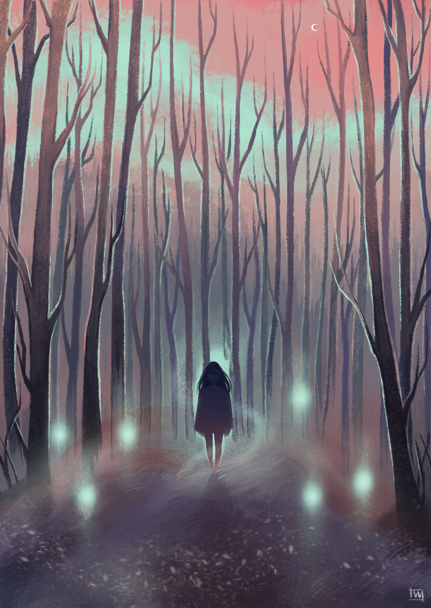
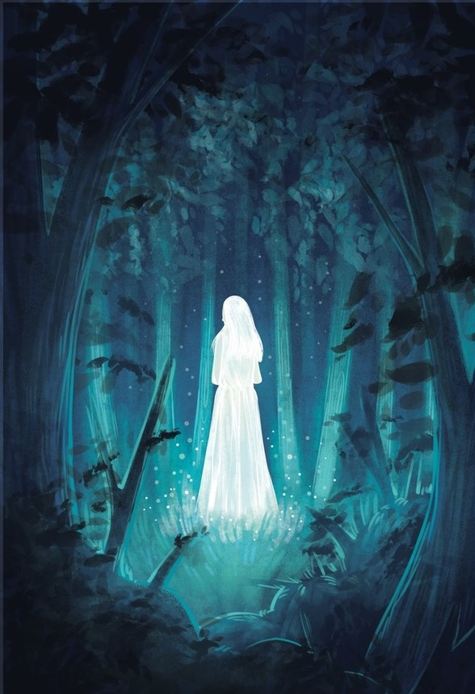

I was a traveller,
Treading chains of roads,
Not knowing where to go.
But that night as I walked under the starless sky,
I was followed by a dreadful roar of my past.
My chaotic mind wandered in every direction,
My fearful heart trembled within its cage,
My eyes shut praying the lord,
When they opened, they saw
Will o’ the Wisp
Burning blue in the mist,
Calling upon my name melodiously,
I heard rumours of getting lost following this little ghost fire
But I could see no light guiding me either.
As the roar amplified,
I followed the trail of blue flames into the dark forest
That stood eerily lifeless.

Of course the tales of the night fires were true,
Will o’ the Wisp
Made me run deeper into the maze of despair,
And there I stood now, in the middle of nowhere
In the middle of five mirrors that pillared around me.
I saw myself in each of them,
Each of them smiling at me,
“You love me, don’t you?” asked the one bearing innocence of a child.
“Are you afraid of yourself?” asked my mirror twin with a twisted smile.
“Rein me before I go wild.” ordered the one with raging eyes.
“The dawn will soon arise!” said the one with a hopeful light.
“Give time a chance to show you the light!” said the one with a solemn voice.
I stood there perplexed, absorbing the series of sentences.
And when I looked up,
I was alone again,
Darkness had as though grown a little older
As its shade scaled up by another number
I heard again the roar, growing stronger
But Will o’ the Wisp was nowhere to be found!
Now that I was drowned further,
I sat down devoid of hope,
Just when the monster reached behind me,
A voice rang in my head,
“The dawn will soon arise!”
And for one last time I opened my eyes
To see a blue flame burning in the mist,
It was will o’ the wisp!
But this time it followed behind me
Towards the monster I feared.
“Are you afraid of yourself?”
Another voice rang and within me
Courage fired.

My eyes slowly followed the light,
To find the demon standing behind,
It was me!
Bearing bright brown eyes,
A contagious smile,
And her face so carefree, like a child,
Her aura shined like a halo around her.
I secretly wished to be like her.
“This is indeed you dear!” she said
“Don’t be surprised, you just lost your way!”
Saying so she hugged me tight and whispered,
“Those roars were the scars you held on tightly inside!”
“Let go! Let them heal with time! Give time, a chance to show you the light!”
Her words rung like an alarm in my head
I was lost in the forest of despair.
Now I realise why will o’ the wisp brought me here
To lose the path that forbade me to find myself
Now I am a traveller,
Treading chains of roads,
Just exactly knowing where to go!